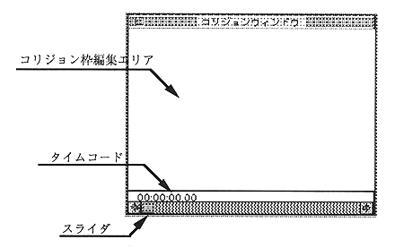

Collision frame editing area
This area is used to edit the collision frame.
Time code
Time code indicating the playback frame of the movie object. For picture objects, it is “00: 00: 00.00”.
Slider
Used to advance (or return) the frame position. It cannot be selected for picture objects.